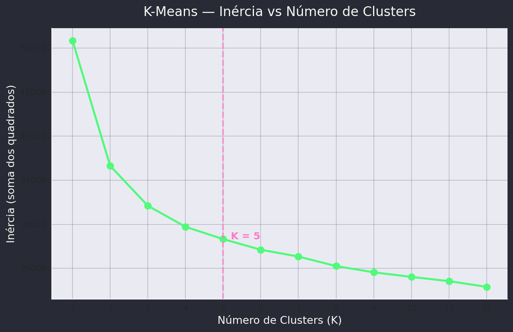
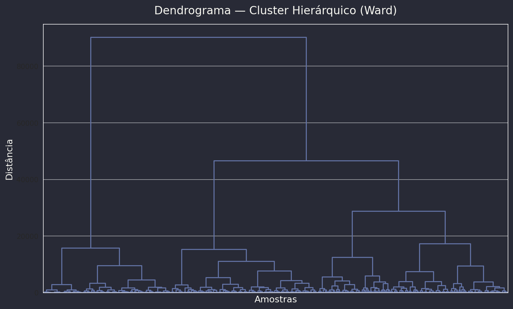
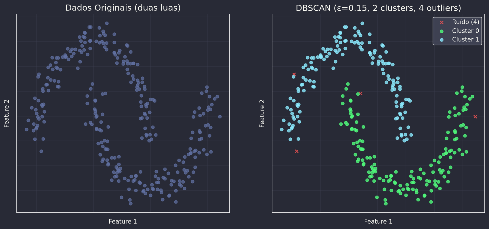
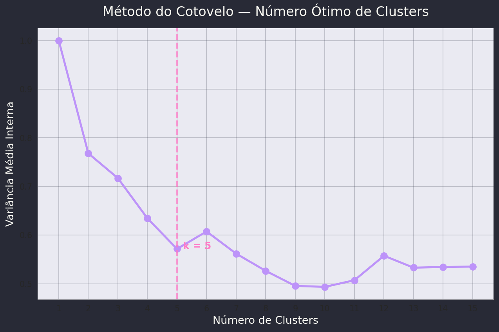
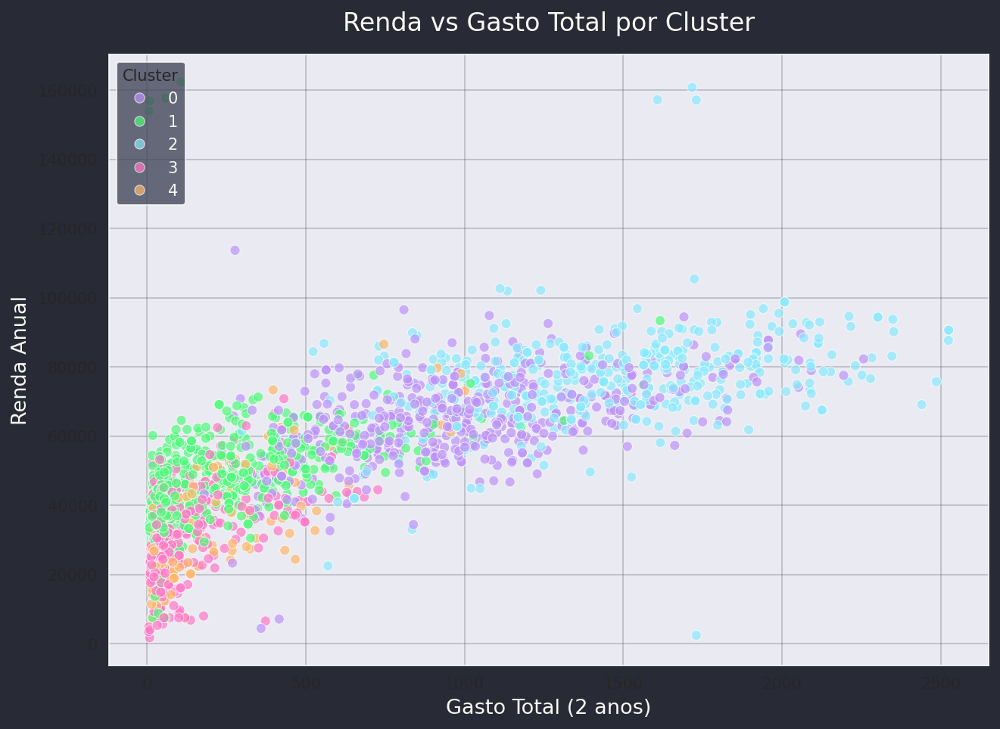
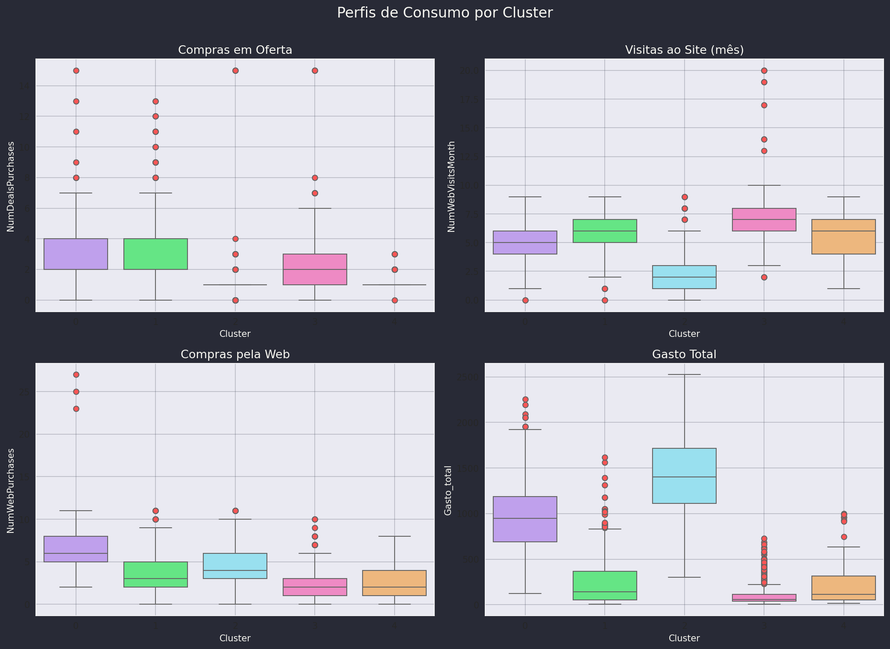
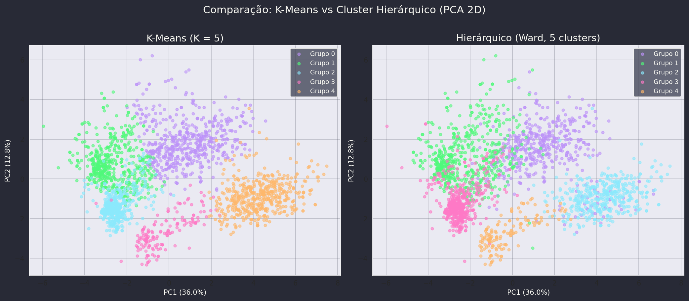

graph LR A["Dados
sem rótulos"] -->|"Cluster
Analysis"| B["Grupos
Naturais"] B --> C["Padrões
Segmentação"] B --> D["Outliers
Anomalias"] style A fill:#44475a,color:#f8f8f2 style B fill:#bd93f9,color:#282a36 style C fill:#50fa7b,color:#282a36 style D fill:#ff79c6,color:#282a36
Aprendizado Não Supervisionado
Diferente da classificação, aqui não há ground truth — o algoritmo descobre a estrutura sozinho.
Supervisionado
Não Supervisionado
O clustering depende de como medimos proximidade entre objetos.
Euclidiana
\( d = \sqrt{\sum (x_i - y_i)^2} \)
Distância em linha reta
Manhattan
\( d = \sum |x_i - y_i| \)
Soma das diferenças absolutas
Cosseno
\( d = 1 - \frac{x \cdot y}{\|x\|\|y\|} \)
Ângulo entre vetores
Correlação
\( d = 1 - \rho(x, y) \)
Dependência linear
| Algoritmo | Abordagem | Força | Limitação |
|---|---|---|---|
| K-Means | Particional (centróides) | Rápido, escalável | K precisa ser definido; clusters esféricos |
| Hierárquico | Dendrograma (bottom-up) | Não precisa definir K; dendrograma visual | Lento para N grande; sensível a ruído |
| DBSCAN | Densidade | Detecta outliers; clusters arbitrários | Sensível aos parâmetros ε e minPts |
%%{init: {'theme': 'base', 'themeVariables': { 'fontSize': '20px', 'fontFamily': 'Roboto'}}}%%
graph TD
A["Renda (R$): ✗ escala 10³"] --> C["Distância dominada pela renda!"]
B["Idade (anos): ✗ escala 10¹"] --> C
C --> D["Solução: StandardScaler"]
D --> E["x' = (x - μ) / σ"]
style A fill:#ff5555,color:#f8f8f2
style B fill:#ff5555,color:#f8f8f2
style C fill:#ffb86c,color:#282a36
style D fill:#50fa7b,color:#282a36
style E fill:#50fa7b,color:#282a36
%%{init: {'theme': 'base', 'themeVariables': { 'fontSize': '18px', 'fontFamily': 'Roboto'}}}%%
graph TD
A["1. Escolher K centróides aleatórios"] --> B["2. Atribuir cada ponto ao centróide mais próximo"]
B --> C["3. Recalcular centróides como média dos pontos atribuídos"]
C --> D{"Centróides mudaram?"}
D -->|"Sim"| B
D -->|"Não"| E["Convergência!"]
style A fill:#bd93f9,color:#f8f8f2
style B fill:#50fa7b,color:#282a36
style C fill:#8be9fd,color:#282a36
style D fill:#ffb86c,color:#282a36
style E fill:#ff79c6,color:#f8f8f2

graph LR A["N clusters
(cada ponto)"] --> B["N-1 clusters"] --> C["..."] --> D["1 cluster
(todos juntos)"] style A fill:#ff5555,color:#f8f8f2 style B fill:#ffb86c,color:#282a36 style C fill:#bd93f9,color:#f8f8f2 style D fill:#50fa7b,color:#282a36
Single (mínimo)
\( d(A,B) = \min d(x,y) \)
Clusters alongados, sensível a ruído
Complete (máximo)
\( d(A,B) = \max d(x,y) \)
Clusters compactos e esféricos
Average (média)
\( d(A,B) = \frac{1}{|A||B|}\sum\sum d(x,y) \)
Equilíbrio entre single e complete
Ward
Minimiza variância intra-cluster
Grupos homogêneos e compactos
Ward é o padrão no scikit-learn — minimiza a variância, produzindo clusters mais equilibrados.

%%{init: {'theme': 'base', 'themeVariables': { 'fontSize': '20px', 'fontFamily': 'Roboto'}}}%%
graph TD
A["ε (epsilon): raio da vizinhança"] --> B["minPts: pontos mínimos para formar cluster"]
B --> C["Core point: ≥ minPts vizinhos em ε"]
B --> D["Border point: < minPts, mas alcançável"]
B --> E["Noise point (outlier): não alcançável"]
style A fill:#8be9fd,color:#282a36
style B fill:#bd93f9,color:#f8f8f2
style C fill:#50fa7b,color:#282a36
style D fill:#ffb86c,color:#282a36
style E fill:#ff5555,color:#f8f8f2

Variância interna média para K clusters:
\( \bar{\sigma}^2 = \frac{1}{K} \sum_{k=1}^{K} \text{mean}\left( \text{Var}(X_k) \right) \)




| Cluster | Perfil | Renda | Gasto | Filhos |
|---|---|---|---|---|
| 0 | Famílias maiores, filhos adolescentes e crianças | Média | Intermediário | 2+ |
| 1 | Famílias com 1 filho adolescente | Média-Alta | Alto | 1 |
| 2 | Sem filhos | Média-Alta | Alto | 0 |
| 3 | Sem filhos | Baixa-Média | Baixo | 0 |
| 4 | Famílias com 1 filho criança | Baixa | Baixo | 1 |
Conecte-se à sala e vote!
| Situação | Método Recomendado |
|---|---|
| Dataset grande, clusters esféricos | K-Means |
| Precisa de dendrograma (visualização hierárquica) | Hierárquico |
| Clusters com formato arbitrário | DBSCAN |
| Precisa detectar outliers automaticamente | DBSCAN |
| Não sabe quantos clusters existem | DBSCAN ou Hierárquico |
| Quer interpretar cada cluster em detalhe | Hierárquico (Ward) |
Objetivo: Aplicar os 3 métodos de clusterização ao dataset de marketing e comparar os resultados.
Próxima aula: Redes Neurais e Deep Learning